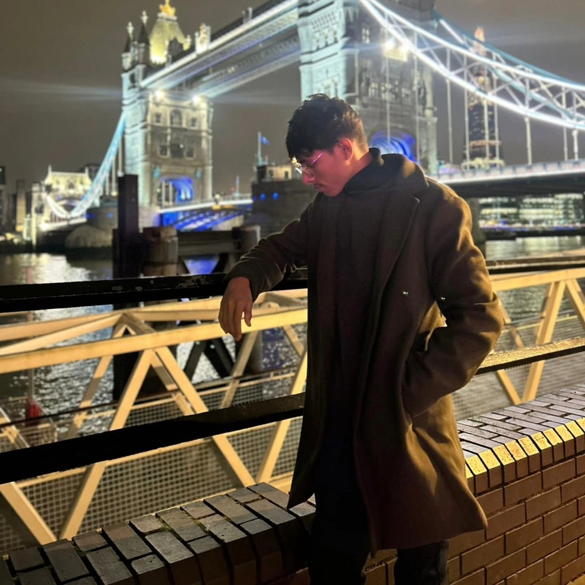
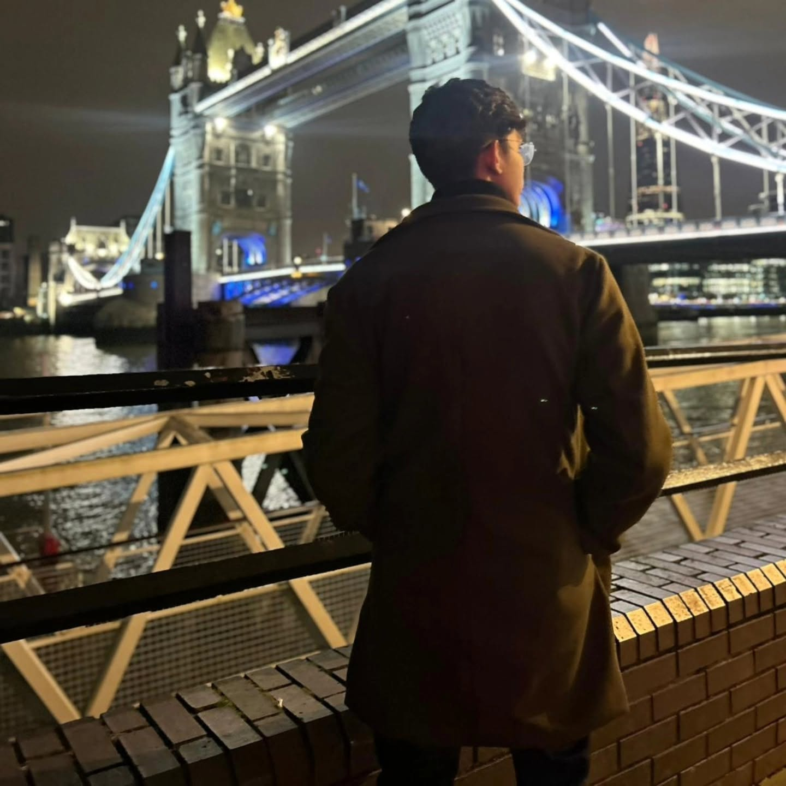

London · funds his own degree · builds under pressure
Ships production code. Serves a busy hotel restaurant floor.
Final-year Computing Science at Coventry University London (71% First Class average at Level 5), graduating July 2027. I designed, built and run a live tournament and points-wallet platform with real payments, and pay for my degree with hotel, bar and overnight shifts. Open to graduate software engineering roles.
jdesport.co.uk is live: 450+ players, 30+ events, counted


I'm a Computing Science student who blends technical precision with real-world service experience. My degree is entirely self-funded — I work hotel restaurant, bar and overnight retail shifts to pay for it, which means every hour of coding time is one I chose over sleep or money, not a given.
The best technology is the kind that serves people effectively and elegantly — that's a hospitality standard as much as an engineering one.
Hospitality taught me to read a room, de-escalate fast, and stay graceful when a service rail is on fire. Those instincts show up directly in how I build software: calm under a production incident, precise about what actually matters to the person on the other end.